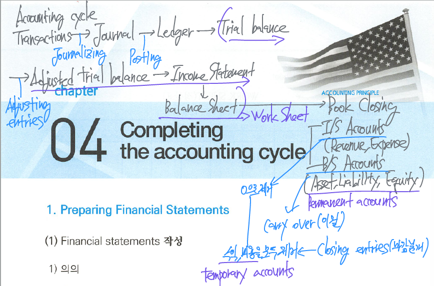

Completing the accounting cycle

Financial statements 작성
T/B를 작성하여 회계기록의 정확성이 검증되면, 발생주의로 전환된 adjusted T/B를 이용하여 F/S를 작성한다.
결산과정 (결산수정분개 ~ 장부마감)의 복잡성 때문에, work sheet (정산표)를 이용하여 F/S를 조금 더 쉽게 작성하는 것이 일반적이다.
Work sheet (정산표)
A multiple-column form that may be used in the adjustment process and in preparing F/S.
시산표 작성부터 손익계산서/재무상태표 작성준비까지 전체 과정을 보여주는 쟈잇ㄱ
작성목적
The work sheet is a device used to make it easier to prepare adjusting entries and F/S.
The use of a work sheet is optional: Not permanent accounting record, neither a journal nor a part of general ledger.

Steps in preparing worksheet
- Prepare a T/B on the worksheet
- enter the adjusting entries
- prepare the adjusted T/B
- Complete the I/S (compute the net income/loss)
- Complete the B/S (N/I in B/S columns = N/I in I/S columns)
Closing the books (장부의 마감)
At the end of the accounting period (After F/S have been completed), the accountants are made ready for the next period.
Closing과 관련된 계정
temporary (nominal) accounts - 임시(명목)계정
permanent (real) accounts - 영구(실질)계정
Temporary accounts (임시계정)
Temporary accounts relate only to one accounting period.
- 한 회계연도에만 존재하는 계정을 의미하며, 회계연도가 바뀌면 새로운 회계연도에는 잔액이 항상 0에서 새롭게 시작되는 계정
유형 - I/S accounts (revenue, expense)
Temporary accounts are closed at the end of the period.
- 회계기간 말에 장부를 마감하면서 해당 임시계정의 총액을 0으로 만드는 절차를 수행 ↔︎ permanent accounts are not closed.
Closing entries (마감분개)
Closing entries produce a zero balance in each temporary account.
Transfers temporary account balances to the permanent equity account by closing entries.
Journalizing

Income summary (집합손익) account
A temporary account used in closing revenue and expense accounts.
→ After closing entries are posted, the revenue, expense, dividend, and income summary accounts have zero balances.
Permanent accounts (B/S 계정: 영구계정)
Permanent accounts relate one or more future accounting period & carries forward the balances to the next accounting period.
- 영구계정은 둘 이상의 회계기간과 연관된 계정이며 회계연도가 종료되어도 계정 잔액이 소멸되지 않고 다음 회계연도로 이월되는 계정이다.
These accounts consist of all B/S accounts (Assets, Liabilities, Equities)
These accounts are not closed from period to period.
Preparing a post-closing T/B
A list of permanent accounts and their balances after closing entries have been journalized and posted.
- Closing entries와 관련된 회계처리의 posting이 완료된 후 작성되는 시산표
Purpose of preparing a post-closing T/B
- To prove the equality of the permanent account balances that are carried forward into the next accounting period.
The post-closing T/B will contain only permanent accounts (B/S accounts).
- Closing 하면서 temporary accounts는 모두 제거되어 0이므로 B/S 계정들만 남아있게 된다.
Reversing entries (역분개)
An entry made at the beginning of the next accounting period that is the exact opposite of the adjusting entry made in the previous period.
- 전기 말 결산수정 분개된 계정과목과 금액을 다음연도 초에 정반대로 수행하는 분개
목적
- It is often helpful to reverse some of the adjusting entries before recording the regular transactions of the next period ⇒ simplify the recording of a subsequent transaction related to an adjusting entry.
The preparation of reversing entries is an optional step.

Correcting entries (오류수정분개): 당기 중에 발생한 오류
Entries to correct errors made in recording transactions.
Adjusting entries (결산수정분개)와 Correcting entries (오류수정분개)의 차이
- Adjusting entries는 현금주의를 발생주의로 전환하기 위해서는 필수적으로 해야하는 회계처리이지만, correcting entries는 회계기록 상의 오류가 존재하지 않는다면 회계처리 할 필요가 없다.
- Adjusting entries는 회계기간 종료시점에만 기록되지만, correcting entries는 오류가 발견되면 시점에 관계없이 즉시 수정을 해야 한다.
- 오류수정분개 (correcting entry)하는 방법은 먼저 잘못된 계정과목이나 금액을 제거하거나 수정하고 올바른 계정과목이나 금액을 추가하여 반영하면 된다.
Correcting entries should be posed before closing entries.
→ after closing, revenue and expense 수정 불가

Summary of the accounting cycle (회계의 순환과정 요약)
| Accounting cycle | 인식시기 | 비고 |
|---|---|---|
| Analyze business transactions (거래의 분석) | 거래 발생시 | 회계상의 거래 판단 |
| Journalize the transactions (분개) | 거래 발생시 | Debit/Credit에 거래의 8요소를 적용하여 분개장에 회계처리 |
| Post to ledger accounts (전기) | 분개 후 | 계정과목별 옮겨적기 |
| Prepare unadjusted trial balance (수정전시산표 작성) | 회계연도 말 | Total debit balance = Total credit balance |
| Journalize and post adjusting entries (수정 분개 및 전기) | 회계연도 말 | Deferral/Accrual 계정 처리 |
| Prepare an adjusted trial balance (수정 후 시산표 작성) | 회계연도 말 | F/S 작성 기초자료 |
| Prepare financial statements (재무제표 작성) | 회계연도 말 | I/S ⇒ B/S |
| Journalize and post closing entries (장부마감) | 회계연도 말 | 마감절차 |
| Prepare a post-closing trial balance (장부마감 후 시산표 작성) | 회계연도 말 | only permanent accounts만 존재 |
| Prepare reversing entries (역분개) | 회계연도 초 | 역분개는 선택사항 |
| Analyze business transactions (거래의 분석) | 거래 발생 시 | 동일한 절차 반복 |

F/S 표준양식
F/S become more useful to information users when the elements of F/S are classified into significant subgroups
- 표준화된 양식에 따라 작성된 재무제표의 요소는 중요한 하위그룹으로 세분화될 때 정보이용자의 의사결정에 보다 유용한 정보로 사용된다.
Balance sheet format (재무상태표 양식)
Report form (보고식)
Lists the sections one above the other on the same page.


Account form (계정식)
lists assets by sections on the left side, and liabilities and stockholders’ equity by sections on the right side.

재무상태표 작성기준
- Current accounts (유동항목)과 non-current accounts (비유동항목)의 구분
- 1년 (one accounting period) 또는 operating cycle 중에서
보다 긴 기간을 기준으로 유동항목과 비유동항목으로 구분- operating cycle (영업순환주기) - The average time that it takes to purchase inventory, sell it on account, and then collect cash from customers.
- 1년 (one accounting period) 또는 operating cycle 중에서

IFRS B/S can list noncurrent items first, and equity before liabilities.
- In the order of liquidity (유동성 배열법)
- 현금화 속도가 빠른 항목부터 우선 배열하여 작성
- Liquidity (유동성 ⇒ 현금화 속도): The ability of a company to pay obligations that are expected to become due within next year or operating cycle.
Income statement (손익계산서 양식)
Multiple-step I/S


Sales에서 차감되는 항목들
- Sales allowances (매출에누리) - Goods are damaged, defective, inferior quality or do not meet the purchaser’s specifications → 구매자는 purchase price에서 차감
- Sales returns (매출환입) - Goods are damaged, defective, inferior quality or do not meet the purchaser’s specifications ⇒ return the goods to the seller + cash refund
- Sales (cash) discount (매출할인, 현금할인) - The credit term of a sales on account permit the buyer to claim a cash discount for prompt payment.
- 매출할인 조건 (credit terms) - 2/10, n/30 (2% discount if paid within 10 days, otherwise full payment within 30 days) ⇒ 총매출액에서 매출에누리와 매출환입액을 차감한 후 금액에서 구매자가 10일 이내 결제하면 2% 만큼 현금할인해주며 (discount period) 외상은 거래발생일로부터 30일 동안만 제공한다.
Single-step I/S
I/S that shows only one steps in determining net income.
- 손익을 수익과 비용 두 가지 범위만으로 구분하고 총수익에서 총비용을 차감하여 당기순이익을 계산한다.

손익계산서 작성기준
US GAAP - Only the function of expense method (기능별 손익계산서)
IFRS - Function of expense method or Nature of expense method. These two types of income statement can be selected.
- 기능별 손익계산서와 성격별 손익계산서 중에서 선택 적용
손익의 구분표시 - sales revenue, COGS, S&A 등 관련 손익을 구분하여 표시한다.
수익과 비용의 총액표시 원칙 - In principle, revenues and expenses are presented as gross amount without offsetting.
- 수익과 비용은 서로 상계하지 않고 총액으로 표시하는 것이 원칙이다. 그러나 gains/losses는 상계표시한다. (유형자산처분손익은 매각대금에서 처분수수료 등을 차감한 순매각금액에서 장부금액을 차감하여 계산한다).